After Yang – 2024

December is a project presenting a work of art in order to buy it in a tangible or intangible format.
December aims to present the film " After Yang " by Kogonada. Through this website, you can immerse yourself in the world of the film. You'll also have the opportunity to simulate the purchase of the piece through an online form.
Visit website 